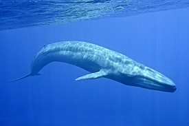

Iodine was discovered accidentally in the year 1811 by a French scientist named Bernard Coutois when he was making explosives.
Technetium is the world's first ever man-made element.
Rhenium has the highest boiling point which is 5596 degree celsius.

Ununseptium is a recently discovered element in a laboratory in 2010.
Samarium is the world's first element to be named after a real person's name that is Vasili Samarsky-Bykhovets in the year 1879.
Astatine is the world's most rarely occurring element and it appeares into the crust of Earth

Gallium has a melting point of 30 degree celcius which will melt easily in our hand.
The planet Neptune has water and methane ice in it's core.
VY Canis Majoris is the biggest star in the universe till now.
Calcium is the only element in our body which is available in more quantity than any other element.
Human beigns grow a new outer skin layer in each month.
Liver has the ability to remove the poisonous compounds present in the alcohols,medicines,drugs and blood.
When our stomach is empty it makes resonant sounds the main reason beyond this is that the muscles of the stomach is contracting to push the the unused digestive juices into the intestine. ***
7% weight of the human body is blood.*
Each day more than 300 gallons of bloods passes through the kidneys.
Our human body is made up of a number of different types of elements they are hydrogen,carbon,oxygen,nitrogen,sodium,potassium,etc.
The villi present in the walls of the small intestine can cover an area of three large sized buildings.
The hyoid bone present at the end of the tongue is the only bone which is not connected to the skeleton.

The goose pimple is the only pimple which does not comes in skin without hair.
There are about 40 types of different bacteria which helps to protect the cavity of the mouth from any types of diseases.
Gulf of California is world's smallest sea and it's approximate area is about 1,53,070 sq km.
The Angel waterfall is world's highest waterfall in Venezuel which is 976 metres.
Around 40% of the world's oxygen is released through the tropical rainforests.
Most of the active volcanoes of the world are more active underwater than in land.
15% of the world's surface is covered by the coniferous forests.
The Asia's largest wing farms is located in China which is the Dabancheng wind farm.

The world's slowest mammal is the three-toed sloth whose average speed is 2 km/h.
A great white shark can stay upto 2 months without food.
The size of a matured great white shark tooth size is 7 cm.
The great white shark has the highest number in attacking and killing humans the most.
USA has the highest number of people who are attacked by sharks in Hawaii
A new born lion weighs upto 2100 grams.
The Krubera caves is the world's deepest caves which is 2191 meters deep located in Georgia.

Indonesia has the largest number of mammal species.

Pectoral sandpiper are the longest migrating bird species of world they travel at a distance of 19000 km.
A quahog(quahog is sea clam) is the longest living marine animal who's lifespan is more than 500 years.
Border collie is the world's most intelligent dog species.
The giant squid is the biggest invertebrate alive which can grow upto size of 60 feet.
Amphibians can lay upto more than 30000 eggs in every breeding period.
The Australian rocket frog can cover a distance of 400 cm in just one jump.
The colossal aldabra tortoise can weigh upto more than 300 kg.
The world's smallest egg is the egg of a bee humming bird who's approximate size is of pea.
The beak of the hummingbird is bigger than it's body size.
The arctic fox fur changes it's colour in every season in winter it's fur is white whereas in summer seasons it's fur changes brownish in colour and in the months of winter arctic fox fur helps to keep it so warm even in extreme cold conditions.
Some of the spider species have blue colour blood.
There are no ant species available in Antarctica,Greenland and Iceland.

The world's biggest mammal is the blue whale whose size is 3000 cm wheras the world's smallest mammal is the hog-nosed bat which is just 3cm in size.

A well nourished giant jellyfish can weigh upto more than 150 kilograms and can also grow upto 2 meters .
The Flamingos's pink colour feathers only comes when they eat the pink crabs these crabs give the actual pink colour to the feathers of flamingo's.If in case they don't eat these crabs their feathers will turn white.
The longest caecillian ever existed was about 8 feet.
A golden poison-dart frog has poison in it's skin and that poison can kill more than 10 people.
The glass frog is the only transparent frog and we can even see it's interior organs too.
The emperor penguins which are the largest penguin species can swim to depth of more than 400 meters deep even in ice-cold ocean.
Some butterfly species have transparent wings which are very delicate and these butterflies can even glow in dark.